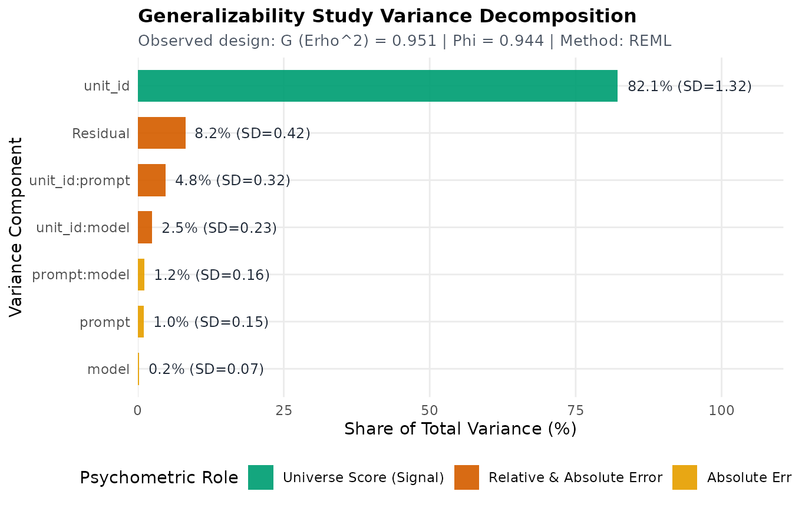
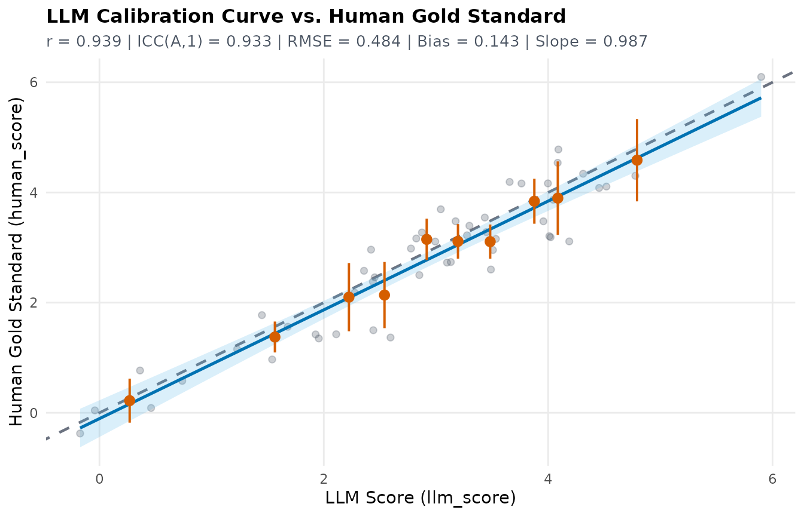
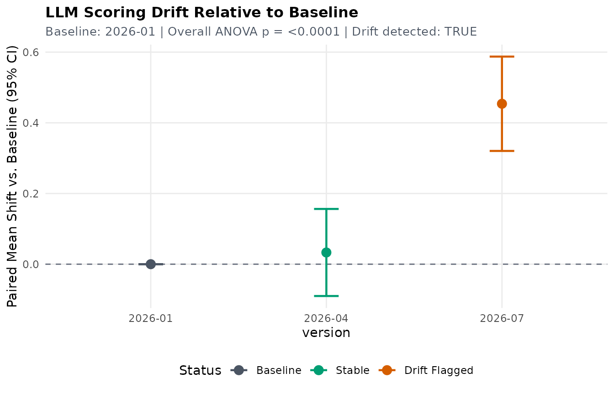
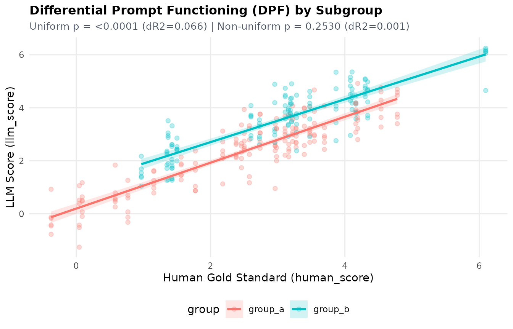
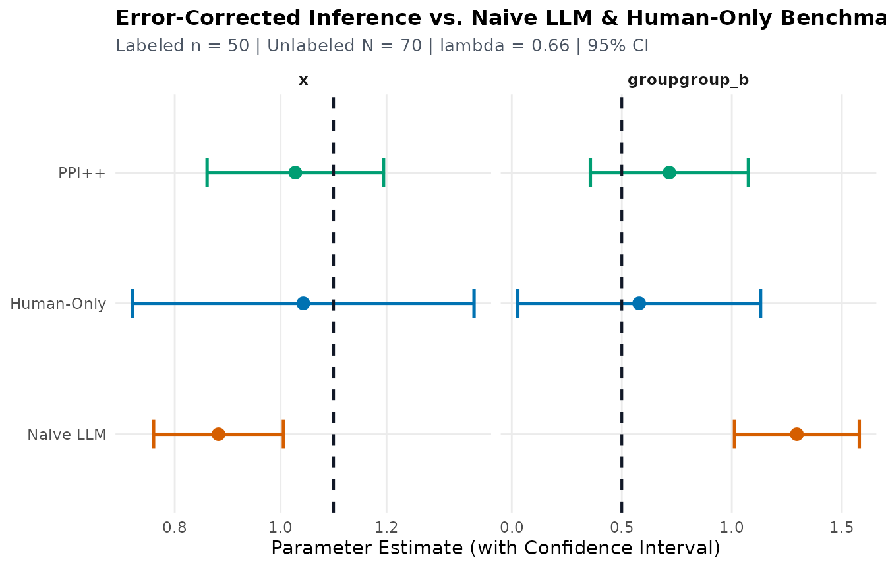

Treating LLMs as Measurement Instruments: Getting Started with llmmetric
Source:vignettes/getting-started.Rmd
getting-started.RmdWhy Treat LLMs as Psychometric Measurement Instruments?
When researchers use large language models (LLMs) to code open-ended survey responses, therapy transcripts, or daily ecological momentary assessment (EMA) diaries into quantitative scores, the resulting variables behave like ratings from fallible human judges—except with new error sources:
- Facet variance: scores fluctuate across prompt wordings, model families, and sampling temperatures.
- Miscalibration & drift: LLM scores may exhibit scale compression, intercept shifts, or temporal drift across API updates.
- Differential Prompt Functioning (DPF): a prompt may systematically over- or under-score specific demographic or experimental subgroups conditional on true human ratings.
- Invalid downstream inference: plugging biased or noisy LLM scores directly into regressions or multilevel models produces biased slopes and anti-conservative confidence intervals.
llmmetric addresses all four issues in one cohesive
workflow.
1. Multi-Facet Structured Coding with Caching & Schema Validation
In production you plug in backend_openai() (any
OpenAI-compatible HTTP endpoint) or backend_ollama() (local
Ollama models). For offline reproducibility, prototyping, and power
analysis, llmmetric provides backend_mock()—a
deterministic synthetic LLM rater parameterized by explicit variance
components, calibration bias, subgroup DPF, and drift.
# Define a strict JSON output schema
schema <- coding_schema(
llm_score = schema_field("numeric", min = -6, max = 12, description = "Emotional distress rating"),
severity = schema_field("factor", levels = c("low", "moderate", "high"))
)
# Specify a crossed 3 prompts x 2 models coding design
design <- coding_design(
prompts = c(
direct = "Rate the speaker's emotional distress: {text}",
rubric = "Apply the clinical distress rubric to score: {text}",
cot = "Identify emotional cues step by step, then score: {text}"
),
models = c("model_a", "model_b"),
temperatures = 0,
schema = schema
)
# Sample corpus with unit-level covariates and human validation subset
set.seed(2026)
corpus <- tibble::tibble(
unit_id = paste0("u_", sprintf("%03d", 1:60)),
group = factor(rep(c("group_a", "group_b"), each = 30)),
true_score = rnorm(60, mean = 3.0, sd = 1.2),
text = paste("Diary reflection number", 1:60)
)
corpus$human_score <- ifelse(seq_len(60) <= 30, corpus$true_score, NA_real_)
# Execute with content-addressed memory cache and synthetic rater
cache <- coding_cache("memory")
backend <- backend_mock(
seed = 101,
intercept = 0.35,
true_score_slope = 0.85,
error_sd = 0.40,
prompt_sd = 0.30,
model_sd = 0.25,
unit_prompt_sd = 0.30,
unit_model_sd = 0.25,
dpf_uniform = c(group_b = 0.65)
)
coded <- code_texts(
data = corpus,
text_col = "text",
id_col = "unit_id",
design = design,
backend = backend,
cache = cache
)
coded
#>
#> ── LLM Coded Data (default_design)
#> Units: 60 | Rows: 360 | Valid: 360/360 | Failures: 0
#> Cache (memory): 0 hits, 360 misses
#> # A tibble: 360 × 13
#> unit_id prompt model temperature replicate llm_score severity cache_hit
#> <chr> <chr> <chr> <dbl> <int> <dbl> <fct> <lgl>
#> 1 u_001 direct model_a 0 1 3.72 high FALSE
#> 2 u_002 direct model_a 0 1 2.65 high FALSE
#> 3 u_003 direct model_a 0 1 2.85 high FALSE
#> 4 u_004 direct model_a 0 1 2.73 high FALSE
#> 5 u_005 direct model_a 0 1 3.03 high FALSE
#> 6 u_006 direct model_a 0 1 0.595 moderate FALSE
#> # ℹ 354 more rows
#> # ℹ 5 more variables: attempts <int>, valid <lgl>, group <fct>,
#> # true_score <dbl>, human_score <dbl>
# Re-running against the same cache produces 100% cache hits
coded_cached <- code_texts(
data = corpus,
text_col = "text",
id_col = "unit_id",
design = design,
backend = backend,
cache = cache
)
coded_cached$cache_stats
#> $type
#> [1] "memory"
#>
#> $dir
#> NULL
#>
#> $hits
#> [1] 360
#>
#> $misses
#> [1] 360
#>
#> $writes
#> [1] 360
#>
#> $evictions
#> [1] 0
#>
#> $entries
#> [1] 3602. Generalizability Theory: G-Study and D-Study
Let’s inspect the built-in ema_coded dataset (120 EMA
diary entries nested within 30 participants, scored across 3 prompts
2 models = 720 codings, with 50 human-validated entries).
data(ema_coded)
g <- g_study(ema_coded, score_col = "llm_score", facets = c("prompt", "model"))
g
#>
#> ── Generalizability Study (G-Study)
#> Units (unit_id): 120 | Facets: prompt=3, model=2 | Method: REML | Balanced:
#> TRUE
#> Observed design: G (Erho^2) = 0.951 | Phi = 0.944 | SEM(rel) = 0.298, SEM(abs)
#> = 0.321
#> Single-facet (n=1): G = 0.842 | Phi = 0.821
#> # A tibble: 7 × 5
#> component variance sd pct_total role
#> <chr> <dbl> <dbl> <dbl> <chr>
#> 1 unit_id 1.74 1.32 82.1 universe
#> 2 prompt 0.0219 0.148 1.03 absolute_only
#> 3 model 0.005 0.0708 0.24 absolute_only
#> 4 unit_id:prompt 0.101 0.318 4.78 relative_and_absolute
#> 5 unit_id:model 0.0525 0.229 2.48 relative_and_absolute
#> 6 prompt:model 0.0249 0.158 1.17 absolute_only
#> 7 Residual 0.173 0.416 8.16 relative_and_absolute
autoplot(g)
Next, use d_study() to answer a core research design
question: How many prompt paraphrases and models do we need to
achieve reliability
at minimum cost?
d <- d_study(g, grid = list(prompt = 1:8, model = 1:4), target = 0.90, metric = "g")
d
#>
#> ── Decision Study (D-Study) Projections
#> Evaluated 32 designs | Target: G (Erho^2) >= 0.90
#> Lowest-cost recommended design: prompt=2, model=1 (2 calls/unit -> G = 0.902,
#> Phi = 0.889)
#> # A tibble: 2 × 10
#> prompt model n_replicates total_calls cost g_coef phi_coef sem_relative
#> <int> <int> <int> <dbl> <dbl> <dbl> <dbl> <dbl>
#> 1 2 1 1 2 2 0.902 0.889 0.436
#> 2 1 3 1 3 3 0.908 0.893 0.420
#> # ℹ 2 more variables: sem_absolute <dbl>, meets_target <lgl>
d$asymptotes
#> # A tibble: 2 × 5
#> facet_to_inf g_ceiling_others_1 phi_ceiling_others_1 g_ceiling_others_obs
#> <chr> <dbl> <dbl> <dbl>
#> 1 prompt 0.971 0.968 0.985
#> 2 model 0.945 0.934 0.981
#> # ℹ 1 more variable: phi_ceiling_others_obs <dbl>
autoplot(d)
3. Calibration vs. Human Gold Standards & Drift Monitoring
Collapsing multi-facet ratings to unit-level composites via
aggregate_scores() lets us evaluate agreement, bias,
dispersion, and calibration curves against human ratings:
unit_df <- aggregate_scores(ema_coded, score_col = "llm_score", id_col = "unit_id")
cal <- calibration_metrics(unit_df, pred_col = "llm_score", truth_col = "human_score")
cal
#>
#> ── LLM Calibration Diagnostics (continuous)
#> Prediction: "llm_score" vs Human Gold Standard: "human_score" (n = 50)
#> r = 0.939 | rho = 0.900 | CCC = 0.932 | ICC(A,1) = 0.933
#> MAE = 0.394 | RMSE = 0.484 | Bias = 0.143 | Cal Slope = 0.987, Intercept =
#> -0.106 (p = 0.1095)
autoplot(cal)
When an API provider silently updates a model checkpoint or you score
new longitudinal waves, check_drift() audits stability on a
fixed anchor set of texts:
set.seed(15)
anchor_units <- paste0("anchor_", 1:40)
anchor_base <- rnorm(40, mean = 3.0, sd = 1.1)
anchor_df <- tibble::tibble(
unit_id = rep(anchor_units, 3),
version = rep(c("2026-01", "2026-04", "2026-07"), each = 40),
score = rep(anchor_base, 3) + rep(c(0, 0.04, 0.55), each = 40) + rnorm(120, sd = 0.25)
)
drift_res <- check_drift(anchor_df, score_col = "score", version_col = "version")
drift_res
#>
#> ── LLM Scoring Drift Diagnostics
#> Baseline: "2026-01" | Overall ANOVA F(2, 78) = 35.568, p = <0.0001
#> Drift detected (alpha=0.05, |d_z|>=0.2): TRUE
#> # A tibble: 3 × 7
#> version n_shared mean_diff cohens_dz icc p_adj drift_flag
#> <chr> <int> <dbl> <dbl> <dbl> <dbl> <lgl>
#> 1 2026-01 40 0 0 1 1 FALSE
#> 2 2026-04 40 0.033 0.086 0.922 0.590 FALSE
#> 3 2026-07 40 0.454 1.09 0.822 0 TRUE
autoplot(drift_res)
4. Differential Prompt Functioning (DPF) & Fairness Diagnostics
High overall correlation with human scores can still mask systematic
subgroup bias. dpf_test() adapts nested DIF regression
models to test uniform (parallel intercept shift) and
non-uniform (slope difference) bias conditional on
human gold-standard scores—using unit-clustered sandwich tests
automatically when units appear across multiple prompts:
dpf <- dpf_test(
ema_coded,
score_col = "llm_score",
truth_col = "human_score",
group_col = "group",
prompt_col = "prompt",
id_col = "unit_id"
)
dpf
#>
#> ── Differential Prompt Functioning (DPF) Diagnostics
#> Family: gaussian | Reference group: "group_a" | Clustered: TRUE | DPF detected:
#> TRUE
#> # A tibble: 3 × 7
#> test statistic df p_value delta_r2 magnitude flagged
#> <chr> <dbl> <dbl> <chr> <dbl> <chr> <lgl>
#> 1 uniform 91.9 1 <0.0001 0.066 moderate TRUE
#> 2 nonuniform 1.31 1 0.2530 0.0007 negligible FALSE
#> 3 omnibus 90.4 2 <0.0001 0.0667 moderate TRUE
#> Per-prompt DPF screening (3 prompts):
#> # A tibble: 3 × 6
#> prompt n omnibus_p omnibus_p_adj delta_r2_total flagged
#> <chr> <int> <dbl> <dbl> <dbl> <lgl>
#> 1 cot 100 1.67e-11 5.02e-11 0.104 TRUE
#> 2 direct 100 6.72e-11 1.01e-10 0.0942 TRUE
#> 3 rubric 100 3.03e- 3 3.03e- 3 0.0226 TRUE
autoplot(dpf, type = "curves")
Notice that dpf_test() clearly separates the injected
uniform subgroup bias (uniform p < 0.0001) from
non-uniform slope bias (nonuniform p > 0.20), and flags
every prompt exhibiting bias after Benjamini-Hochberg FDR control.
5. Error-Corrected Downstream Inference (PPI++ & Multilevel
ppi_lmer)
Because ema_coded exhibits both calibration distortion
and uniform subgroup bias for group_b, plugging
llm_score directly into lm() biases the
estimated group difference.
Using ppi_lm() and ppi_lmer(), we combine
the 50 human-validated entries with the 70 unlabeled LLM-coded entries
to obtain provably unbiased estimates, valid 95% confidence
intervals, and narrower standard errors than using the 50 human ratings
alone:
fit_lm <- ppi_lm(human_score ~ x + group, data = unit_df, pred_col = "llm_score")
summary(fit_lm)
#>
#> ── Prediction-Powered Inference (ppi++)
#> Labeled n = 50 | Unlabeled N = 70 | lambda = 0.664 | CI = 95%
#> # A tibble: 3 × 7
#> term estimate std_error conf_low conf_high p_value var_gain
#> <chr> <dbl> <dbl> <dbl> <dbl> <chr> <dbl>
#> 1 (Intercept) 2.50 0.127 2.25 2.75 <0.0001 1.95
#> 2 x 1.03 0.085 0.861 1.19 <0.0001 3.75
#> 3 groupgroup_b 0.716 0.183 0.357 1.08 <0.0001 2.36
#> Benchmarks (PPI vs Human-Only vs Naive LLM):
#> # A tibble: 9 × 7
#> method term estimate std_error conf_low conf_high p_value
#> <chr> <chr> <dbl> <dbl> <dbl> <dbl> <chr>
#> 1 ppi++ (Intercept) 2.50 0.127 2.25 2.75 <0.0001
#> 2 ppi++ x 1.03 0.085 0.861 1.19 <0.0001
#> 3 ppi++ groupgroup_b 0.716 0.183 0.357 1.08 <0.0001
#> 4 human_only (Intercept) 2.53 0.177 2.18 2.87 <0.0001
#> 5 human_only x 1.04 0.164 0.720 1.37 <0.0001
#> 6 human_only groupgroup_b 0.579 0.281 0.0276 1.13 0.0396
#> 7 naive_llm (Intercept) 2.34 0.0991 2.14 2.53 <0.0001
#> 8 naive_llm x 0.883 0.0626 0.76 1.01 <0.0001
#> 9 naive_llm groupgroup_b 1.30 0.145 1.01 1.58 <0.0001
Because EMA diary entries are nested within 30 participants
(cluster), ppi_lmer() incorporates
random-intercept variance components and cluster-robust PPI++ sandwich
standard errors:
fit_ml <- ppi_lmer(human_score ~ x + group + (1 | cluster), data = unit_df, pred_col = "llm_score")
fit_ml
#>
#> ── Prediction-Powered Inference (ppi++_clustered)
#> Labeled n = 50 | Unlabeled N = 70 | lambda = 0.604 | CI = 95%
#> Clusters (cluster): 25 labeled, 29 unlabeled (30 total; overlapping)
#> Random-intercept REML (human): tau2 = 0.786, sigma2 = 0.257, ICC = 0.754 |
#> Weighting: gls_cluster_size_weighted
#> # A tibble: 3 × 7
#> term estimate std_error conf_low conf_high p_value var_gain
#> <chr> <dbl> <dbl> <dbl> <dbl> <chr> <dbl>
#> 1 (Intercept) 2.50 0.150 2.20 2.81 <0.0001 1.59
#> 2 x 1.03 0.085 0.855 1.20 <0.0001 4.46
#> 3 groupgroup_b 0.705 0.165 0.368 1.04 0.0002 2.17See
vignette("ppi-coverage-proof", package = "llmmetric") for a
formal Monte Carlo proof comparing empirical 95% confidence interval
coverage across Naive LLM, Human-Only, PPI, and PPI++ estimators.